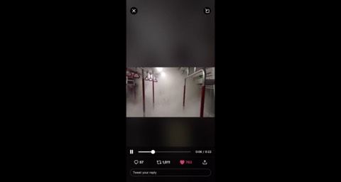
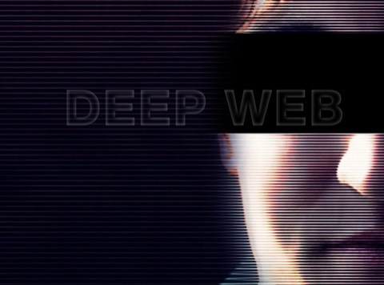

About the film
Do Not Circulate
, an experimental short film directed by Tiffany Sia, attempts a structuralist and materialist approach to unraveling the entrails of a collective media memory. Paced by an essay as a relentless voiceover, the film rips footage that challenges the materiality, ownership and legal boundaries of documentation. This film contains footage, descriptions and acts that may constitute criminal offenses under prevailing laws. The following offense-related material is meant for documentary purposes only. All rights reserved to respective copyright owners. The archival footage spans a single news event in Hong Kong, weaving a violent timeline in roughly the order that the materials were published online, including anonymously uploaded videos from Twitter and internet forums, allegedly leaked audio and news reportage—much of which has since been erased, disavowed or forgotten. A digital media trail teeters between the seeable and unseeable, deception and truth, conjuring ghosts and occult forces on the timeline.
Do Not Circulate
is featured in Short Cuts Program #4.
Tiffany Sia
RESERVE A FREE TICKET
At the festival
More films on these topics
 The GrabGabriela Cowperthwaite2022 · 104 min
The GrabGabriela Cowperthwaite2022 · 104 min
Deep WebAlex Winter2015 · 86 min The Sludge WarGalassia Grassetto2026 · 80 min
The Sludge WarGalassia Grassetto2026 · 80 min The Black SwanMads Brügger2025 · 90 min
The Black SwanMads Brügger2025 · 90 min The Six Billion Dollar ManEugene Jarecki2025 · 126 min
The Six Billion Dollar ManEugene Jarecki2025 · 126 min We Bloom in Spring2025 · 19 min
We Bloom in Spring2025 · 19 min